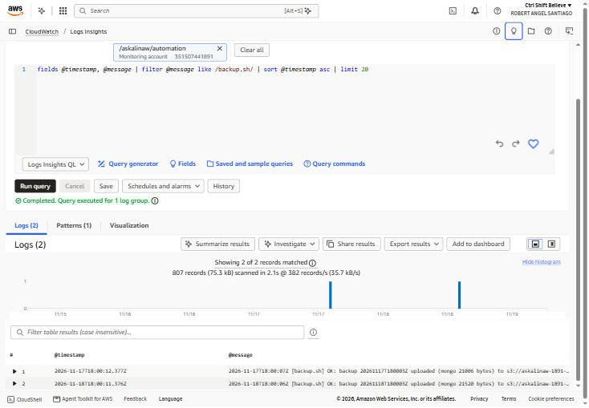
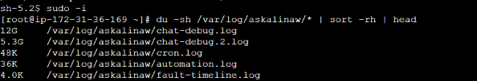
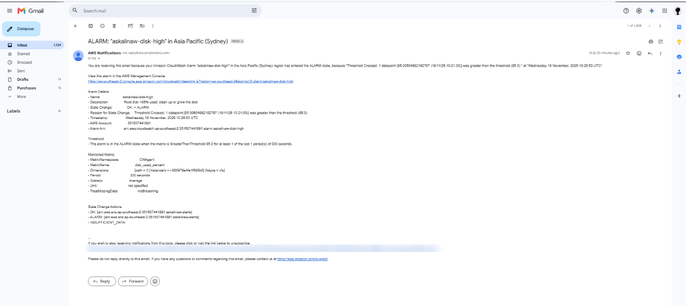
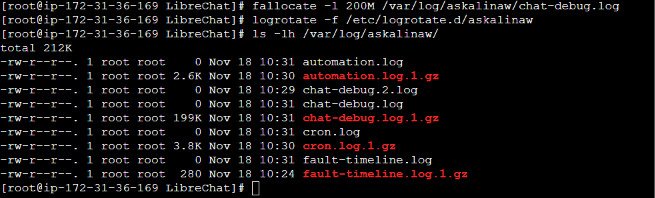
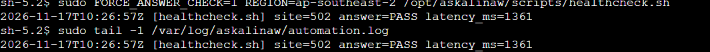
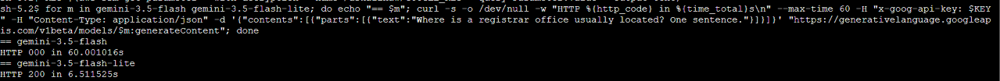
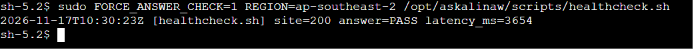

Automation and the incident
Two automations
| 1 · Nightly backup | 2 · Health and answer check | |
|---|---|---|
| Script | scripts/backup.sh | scripts/healthcheck.sh + ask_model.py |
| Schedule | cron, 02:00 Manila every night | cron, every 5 minutes (site); the AI answer check runs on the first run of each hour |
| What it does | Dumps MongoDB, archives config, uploads both to S3, reports BackupFailed 0/1 | Loads the site and reports SiteDown; once an hour asks the model a question with a known answer and reports AnswersFailed, EmptyAnswer, AnswerLatencyMs |
| Ran unattended at (Manila time) | 18 Nov 02:00, 19 Nov 02:00 | 17 Nov 01:50 first … 19 Nov 18:20 last (782 runs) |

/askalinaw/automation, last 4 days: the two backup.sh runs, 17 Nov 18:00 UTC and 18 Nov 18:00 UTC (02:00 Manila), both "OK: backup … uploaded", with nobody logged in.Deploy instructions are in the repository README.md.
Incident INC-01: the disk filled up (18 Nov 2026)
| When (Manila time) | What happened |
|---|---|
| 18:13 | Started: a runaway "chat debug log" began writing 1 GB every 30 s (fault injected with fault/fill-disk.sh). Disk at 37%. |
| 18:18 | The script stopped at 77%: fallocate could not grow the one file any further. We added a second 5 GB debug log (chat-debug.2.log) to carry the same fault past the alarm line. |
| 18:21 | Disk passed 85% (first 5-minute average: 85.006%). It went on to 94% (29 of 30 GB used). |
| 18:26 | Noticed: email "ALARM: askalinaw-disk-high" (alarm state change 18:26:53). |
| 18:27 | Site: FILL-IN (what you saw when you tried a chat at 94%). |
| 18:29 | Fixed: both debug logs truncated, disk back to 37%, LibreChat and MongoDB restarted, all containers Up. |
| 18:31 | Prevented: log rotation installed and tested (see below). |
Time to detect: 13 min from the start, about 6 min after the disk passed 85% (the alarm averages over 5 minutes). Time to fix: 3 min (alarm email to disk back to 37%).
Investigation

df -h / at 94%: 29 of 30 GB used, 1.9 GB left.
du pointing to the two debug logs: chat-debug.log (12 GB) and chat-debug.2.log (5.3 GB).
Root cause
The disk filled because a debug log under /var/log/askalinaw/ had no log rotation or size limit, so nothing stopped it
growing. We stopped it at 94%. Left alone it reaches 100%; then MongoDB cannot write, LibreChat cannot save messages or sessions,
and users get errors. Restarting alone would not have helped: the file would still be there.
Prevention, and proof it works
- Log rotation (
infra/logrotate-askalinaw): every log in our folders is capped at 50 MB × 3, checked hourly. Docker container logs were already capped at 10 MB × 3. - Alarm on the root-cause metric:
askalinaw-disk-highat 85% gave us warning before 100%. - Verified at 18:31 on 18 Nov: we wrote a 200 MB test log, ran
logrotate -f /etc/logrotate.d/askalinaw, and the log was emptied and kept as a compressedchat-debug.log.1.gz. A side effect proved it too: rotation also compressed our ownfault-timeline.log, so we read the first half of the timeline back withzcat.

logrotate -f: every log in the folder is back to 0 bytes with a compressed .1.gz copy beside it.Incident INC-02: the AI model stopped answering (17 Nov 2026, not planned)
This one happened on its own. Our health check caught it.
| When (Manila time) | What happened |
|---|---|
| 02:02 | Noticed: email "ALARM: askalinaw-answers-failed". It then flipped between ALARM and OK all night. |
| 08:59 | The health-check log showed HTTP Error 429: Too Many Requests on every check. |
| 09:11 | Fix 1: the model check runs once an hour, not every 5 minutes, and the alarm needs two failed hours in a row. |
| 16:00 and 18:01 | Hourly checks failed differently: 503 Service Unavailable, then a 60 s timeout. |
| 18:15 | The chat on the site itself returned "status 503". |
| 18:20 | We tested both models directly: gemini-3.5-flash gave no answer in 60 s, gemini-3.5-flash-lite answered in 6.5 s. |
| 18:26 | Fix 2: switched to gemini-3.5-flash-lite and redeployed. |
| 18:30 | Verified: health check site=200 answer=PASS, answer in 3.7 s. |
Root cause: two causes in a row. First, our own check called the model 288 times a day, over the Gemini free tier, so Google answered 429. Second, the free tier of gemini-3.5-flash was overloaded that day (503 and timeouts). Prevention: 24 model calls a day instead of 288; a lighter model with more free capacity; the log now records the error reason; the alarm ignores a single failed hour.
What we learned: the alarm worked, but it fired at 2 AM while we slept, so detection took hours. A free AI tier is a dependency we do not control.




answer=PASS.Runbook: Server disk full
The full runbook is fault/RUNBOOK-disk-full.md. Last tested 18 Nov 2026 (INC-01), took 3 minutes to fix and 5 more to install the prevention.
1. WHAT IT IS FOR Get Askalinaw working again when the root disk is full, and stop it refilling.
2. YOU NEED IT WHEN Email "ALARM: askalinaw-disk-high"; users can't save chats. Check: df -h /
3. AFFECTS Everyone. New messages and logins fail.
4. DO IT sudo -i
du -xh / --max-depth=2 | sort -rh | head -15 -> find the big file
lsof +L1 -> deleted-but-open files?
truncate -s 0 /var/log/askalinaw/chat-debug.log -> df -h / back to normal
cd /opt/LibreChat && docker compose restart api mongodb
install log rotation (runbook step 6)
5. CHECK df < 85% · test question answered · disk alarm back to OK · no alarms for 10 min
6. UNDO truncation only loses that log; if the DB is damaged run scripts/restore-test.sh
7. GOTCHAS rm on an open log doesn't free space - use truncate